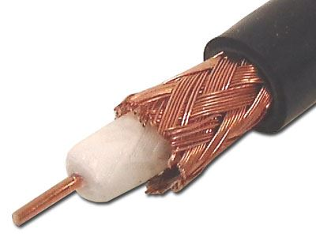
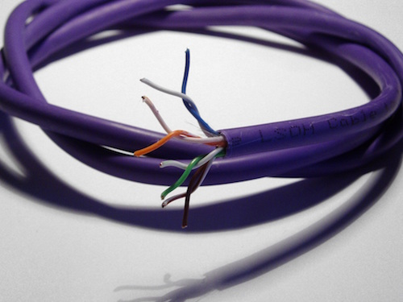
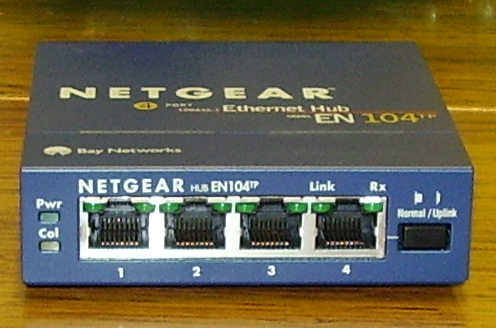
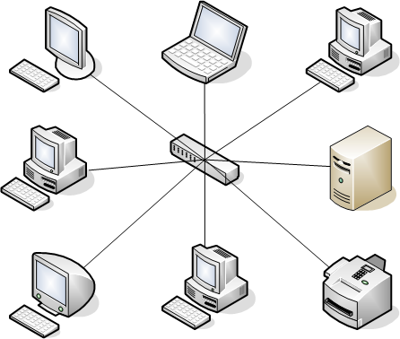

# Meta - Welcome to Computer Networking Brain Dump - We'll meet once a week - I'll cover fundamentals, history, basics - Not meant to teach tools but I'll mention them as we go - I'll try to suggest things to try at home --- # Birth of the Ethernet - Scientists at PARC wanted a simple way to connect computers together - Decided to hook up computers to a single piece of coax wire - Early on, connectors just punched a hole to get to the core - Each host has an "Ethernet adaptor" / NIC - 10 megabits per second (10BASE5 & 10BASE2)  --- # Ethernet basics - With single wire signal travels to everyone -- shared medium - Great for one computer talking to all -- broadcast - But most comms are point-to-point - Only one host can "talk" at any one instant --- # Carrier Sense - Two hosts can't talk at the same time -- will garble each other - But there's nothing to synchronize the hosts - Host wishing to trasmit: - Waits for the line to go quiet - Starts transmitting and listens - If it detects interference - Stops transmitting - Waits random amount of time - Tries again --- # Packets - Each host can only transmit a little bit at a time - Avoids hogging the line problem - Each Ethernet Frame can fit 1500 bytes max (MTU) --- # Need for addressing - How do you talk to only a single host? - Assign each host an address - Include destination address in each packet - NIC filters out packets not destined to it --- # MAC addresses - 6 byte address - Lower 3 bytes are device manufacturer (OUI) - Assigned by IEEE - Upper 3 bytes are assigned by manufacturer (NIC) - Originally burned into hardware --- # Ethernet Frame <img src="ether-frame.png" width="100%"> --- # Types of addresses - Unicast: bbbb:bbb0-XX-XX-XX-XX-XX - Broadcast: FF-FF-FF-FF-FF-FF - NIC does not filter out - Multicast: bbbb:bbb1-XX-XX-XX-XX-XX - Each address is a "topic" - NIC does not filter out - Special handling of specific "topics" --- # Beyond coax - Coax is costly and inflexible - Replaced by twisted pair (10BASE-T) - Twisted pair has smaller range - Rise of star topology - Twisted pair plugged into a hub  ---  